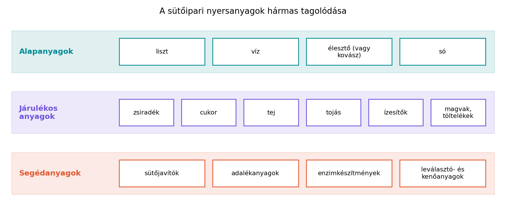

Reggel fél öt van, a pék megkezdi a fehér kenyeret és a tejes kalácsot. Ugyanaz a liszt, só, élesztő és víz van a kamrában, de a két tészta egészen másként viselkedik. A kenyér feszes, jól formázható, kevésbé édes; a kalács lágyabb, zsírosabb, édesebb, és sokkal gyorsabban kel. A különbség nem a véletlen műve, hanem a nyersanyagok megválasztásának és arányának a következménye. Ha a pék nem tudja, hogy a liszt miért viselkedik másképp, ha több cukrot vagy zsiradékot kap, akkor csak receptet „másol”, de nem érti a tésztáját. Ez az alfejezet ezt az értést alapozza meg: rendszerezi a sütőipari nyersanyagokat, és bemutatja azokat a kémiai, fizikai és biológiai jellemzőket, amelyek a liszt, a kovász, a tészta és a késztermék viselkedését meghatározzák.
A pékségben használt anyagokat célszerű három nagy csoportba sorolni aszerint, hogy mekkora mennyiségben adagoljuk őket, és mi a technológiai szerepük. A rétegek fentről lefelé haladva a tésztában jellemzően kisebb mennyiségű csoportokat mutatják, de ez nem fontossági sorrend: egyetlen rossz segéd- vagy járulékos anyag is tönkreteheti a terméket. A rétegek között nincs nyíl, mert az egyik csoportból nem lesz a másik.

Az ábra azt mutatja, hogy a liszt, a víz, az élesztő (vagy kovász) és a só nélkül kenyér nem készíthető; a járulékos anyagok a termék jellegét, dúsítását, díszítését, töltését adják; a segédanyagok nélkülözhetők, a technológiát segítik (erjedés, állomány, eltarthatóság). A csoportok a 11–14. fejezetben külön-külön részletesen szerepelnek: Gabona és liszt, Víz, élesztő, só és lazítóanyagok, Segéd- és adalékanyagok, Járulékos anyagok. A csoportok közötti határ nem mindig éles, de a gondolkodást megkönnyíti, és a későbbi fejezetek is erre a beosztásra építenek (ellenőrizendő: hatályos pék KKK/PTT és pék szakkönyv).
Definíció. Alapanyag: a sütőipari tészta szerkezetét és alapvető működését meghatározó nyersanyag, amely nélkül a kenyér nem készíthető el. Ide tartozik a liszt (vagy más őrlemény), a víz (vagy tej, savó, esetleg más folyadék), az élesztő (vagy kovász) és a só. A liszt adja a vázat, a víz oldja a többi anyagot és lehetővé teszi a bedolgozást, az élesztő vagy kovász lazít, a só szabályozza az erjedést és ízt ad.
Definíció. Járulékos anyag: olyan nyersanyag, amely a termék jellegét, dúsítását, ízesítését, töltését vagy díszítését adja, de a tészta alapvázát nem határozza meg. Például zsiradék, cukor, tej, tejpor, tojás, ízesítőanyagok, magvak, aszalt gyümölcsök, töltelékek, bevonatok. A járulékos anyagok mennyisége termékcsoportonként nagyon eltérő: a vizes kifliben nincs tojás, a briósban viszont a tojás és a vaj is jelentős.
Definíció. Segédanyag: nélkülözhető, kis mennyiségben adagolt anyag, amely a technológiát segíti, a tészta tulajdonságait, színét vagy eltarthatóságát javítja. Ide tartoznak a sütőjavítók, az adalékanyagok, az enzimkészítmények, a leválasztó- és kenőanyagok. Mennyiségük általában néhány tized százaléktól néhány százalékig terjed a liszt tömegére vetítve, de hatásuk aránytalanul nagy lehet.
Megjegyzés. A hármas felosztás didaktikai rendszer, nem jogszabályi kategória. A hazai felosztás a tészta alapját (alapanyagok), a termékjelleget adó anyagokat (járulékos anyagok) és a technológiát segítő, nélkülözhető anyagokat (segédanyagok) különíti el; a konkrét besorolás a mennyiségtől és a terméktől függően árnyalódhat (például a cukor 1–2%-ban főleg az élesztő tápláléka, 10–20%-ban a termék édes jellegét adja), ezért az üzemi receptúra és a hatályos képzési dokumentum az irányadó (ellenőrizendő: hatályos KKK/PTT, pék szakkönyv).
A nyersanyagok nem „csak liszt”, „csak tojás” – mindegyik kémiai összetevők keveréke. A pék számára a legfontosabb összetevők: víz, szénhidrátok, fehérjék, zsírok, ásványi anyagok, vitaminok. Ezek viselkedése határozza meg a tésztát, az erjedést, a sütést és a termék frissességét.
A víz a tészta második legnagyobb tömegű összetevője, és a legfontosabb oldószer. Feladatai:
A tésztakészítéskor a liszt vízfelvevő képessége alapján számolunk dagasztóvizet. Ha kevés a víz, a tészta kemény, száraz, rosszul kel; ha túl sok, a tészta ragad, szétfolyik, a termék lapos és sűrű bélzetű lesz. A pontos számítást a Tésztahőmérséklet és dagasztóvíz számítása alfejezetben tanuljuk meg.
A szénhidrátok a liszt és sok járulékos anyag fő tömegét adják. A sütőiparban három csoportjukat kell jól ismerni.
Keményítő. A búza- és rozsliszt szárazanyagának mintegy 60–75%-a keményítő (ellenőrizendő: az adott liszt vizsgálati adatlapja). A keményítő két polimerből áll: amilózból (egyenes láncú) és amilopektinből (elágazó). Hideg vízben a keményítőszemcsék nem oldódnak, csak megduzzadnak; kb. 55–65 °C-tól a szemcsék vizet vesznek fel, a keményítő csirizesedik (tanulási érték, ellenőrizendő), és a tészta szerkezete megmerevedik. Ez a folyamat a sütés közbeni bélzetképződés egyik alapja. A kihűlt termékben a keményítő visszakristályosodik (retrogradáció), ez okozza a kenyér öregedését, amit a Hűtés, tárolás és a termék öregedése alfejezet tárgyal.
Cukrok. A lisztben kis mennyiségű egyszerű cukor van: glükóz, fruktóz, maltóz, szacharóz. A sütőipari cukor (répacukor, szacharóz) járulékos anyagként édesíti a terméket. A cukor emellett az élesztő gyors energiaforrása, tehát gyorsítja az erjedést, nagyobb mennyiségben viszont ozmotikus nyomása miatt gátolja az élesztőt. A sütés során a cukrok és a fehérjék között Maillard-reakció zajlik, amely a héj barnulását és a jellegzetes sült ízt adja. A keményítőből az amiláz enzim maltózt szabadít fel, így a liszt saját cukrai is részt vesznek az erjedésben.
Rost. A rost a növényi sejtfal emészthetetlen szénhidrátja: cellulóz, hemicellulóz, pentozánok, lignin. A teljes kiőrlésű és rozslisztekben több van belőle. A rost vízkötő, térfogatnövelő, és fontos élettani szerepe van. A tésztában a pentozánok sok vizet vesznek fel, ezért a rozsos, teljes kiőrlésű tészták több vizet igényelnek, de a sikérvázat is gyengítik. A rostos termékek gyártásánál mindig figyelni kell erre az egyensúlyra.
A fehérjék aminosavakból felépülő, nagy molekulájú vegyületek. A sütőiparban két szempontból kulcsfontosságúak.
A lisztfehérjék közül a gliadin és a glutenin adja a sikért. A dagasztás során víz és mechanikai munka hatására a két fehérjefrakció térhálós szerkezetet, sikérvázat alkot. Ez a váz csapdázza az élesztő által termelt szén-dioxidot, ezért kel meg a kenyér. A sikér mennyisége és minősége döntően meghatározza a tészta nyújthatóságát, rugalmasságát és a késztermék térfogatát. A liszt technológiai tulajdonságait részletesen A liszt technológiai tulajdonságai alfejezet tárgyalja.
A tojásfehérje, tejfehérje is szerkezetet és tápanyagot ad. A tojásfehérje hőre megalvad, ezzel merevíti a sütemény bélzetét; a tejfehérje a kéreg színeződésében is szerepet játszik.
A fehérjék hőérzékenyek: kb. 60–75 °C között alvadnak (denaturálódnak), azaz elveszítik eredeti térszerkezetüket. A kemencében ez a folyamat rögzíti a tészta vázát, és hozzájárul a termék átsüléséhez.
A zsírok és olajok zsírsavakból és glicerinből álló észterek. A sütőiparban a vaj, margarin, étolaj, sertészsír, tojássárgája, tejpor és egyes magvak zsiradéka jelenik meg. A zsiradék a tésztában:
A zsiradék mennyiségét mindig a termékcsoporthoz igazítjuk: a vizes tésztában nincs vagy alig van; a dúsított, finom pékárukban akár 10–25% is lehet a lisztre vetítve. A zsiradék minősége és hőmérséklete is fontos: a túl meleg, olvadt zsiradék szétkenődik a tésztában, a hideg, kemény zsiradék pedig nem dolgozódik be egyenletesen.
Az ásványi anyagok a liszt hamutartalmában koncentrálódnak. A búza héjrétegeiben sok a kálium, foszfor, magnézium, vas, cink; a belső, fehér lisztrészekben kevesebb. A liszt hamutartalma jelzi az őrlési kiőrlés fokát: a BL 55 liszt hamutartalma alacsonyabb, a teljes kiőrlésűé magasabb (a pontos határértékek a Lisztfajták, liszttípusok és jelölésük alfejezetben, az Élelmiszerkönyv szerint ellenőrizendők). A só (nátrium-klorid) a legfontosabb hozzáadott ásványi anyag: ízt ad, erősíti a sikérvázat, szabályozza az erjedést, csökkenti a vízaktivitást, ezzel tartósít.
A gabona B-vitaminokat (B1, B2, B6, niacin), E-vitamint és kisebb mennyiségben más vitaminokat tartalmaz. A finomított fehér lisztekben a korpa és a csíra eltávolítása miatt a vitamin- és ásványianyag-tartalom csökken; a teljes kiőrlésű termékek vitaminban gazdagabbak. A vitaminok hőérzékenyek, de a sütőipari termékeknél a cél nem a vitaminmegőrzés, hanem a fogyasztható, biztonságos, élvezetes termék előállítása. A vitaminok a jelölésben és a tápérték-számításban jelennek meg, amit a Termékjelölés és fogyasztói tájékoztatás alfejezet tárgyal.
Definíció. Enzim: a sejtek által termelt, fehérje természetű biokatalizátor, amely egy adott kémiai reakciót felgyorsít, de maga nem fogy el. Az enzim működéséhez megfelelő hőmérséklet és pH szükséges. A sütőiparban három enzimcsoport határozza meg a liszt, a kovász és a tészta viselkedését.
Amiláz. A keményítőt bontja kisebb egységekre, maltózra és dextrinekre. A lisztben természetes α- és β-amiláz van. Az α-amiláz a keményítőszemcséket hasítja, a β-amiláz maltózt szabadít fel. A maltózt az élesztő szén-dioxiddá és alkohollá erjeszti, tehát az amiláz biztosítja a folyamatos gáztermelést a hosszú erjedés alatt. Ha a liszt amilázaktivitása túl alacsony, a tészta lassan kel, a héj halvány; ha túl magas, a keményítő erősen lebomlik, a bélzet ragadós, kenőcsös. Ezért vizsgálják a liszt esési számát, amit A liszt sütőipari vizsgálatai alfejezetben mutatunk be.
Proteáz. A fehérjéket bontja kisebb peptidekre és aminosavakra. A tésztában a proteáz a sikérvázat lazítja: rövidíti a dagasztási időt, javítja a nyújthatóságot, de túlzott aktivitása miatt a tészta szétfolyik, a termék lapos. A proteázaktivitás különösen hosszú pihentetésnél vagy meleg tésztában nő meg.
Lipáz. A zsírokat bontja zsírsavakra és glicerinre. A liszt saját lipáza tárolás alatt szabad zsírsavakat termel; ezek oxidálódva avas, kesernyés ízt okoznak – ezért a teljes kiőrlésű liszt rövidebb ideig tárolható (lásd A liszt mikroflórája, liszthibák és lisztromlás). A sütőipari lipázkészítmények a tésztában emulgeáló hatású bomlástermékeket képeznek, ezek javíthatják a bélzetet és a térfogatot (ellenőrizendő: a készítmény adatlapja).
Szabály. Hőmérséklet- és pH-függés. Minden enzimnek van optimális hőmérséklete, ahol a legaktívabb, és egy magasabb hőmérséklet, ahol denaturálódik, azaz elveszíti hatását. A sütőipari amilázok jellemzően 40–70 °C között aktívak, de ez enzimenként és forrásonként eltér (ellenőrizendő: az enzimkészítmény gyártói adatlapja). A tészta pH-ja is szabályozza az enzimeket: a kovászos tészták savasabb környezete (pH 4–5 körül) lassítja az amilázt, ezért a rozskenyeret savanyú kovásszal készítik, hogy a keményítő ne bomoljon túl. Ezt az összefüggést részletesen A kovászérés folyamatai és a kovász érettsége alfejezet használja.
Továbbvitt eredmény. Az enzimek ismerete nélkül nem érthető a kovász érlelése, a tészta pihentetése, a sütés alatti keményítő- és fehérjeátalakulás. Az amiláz, proteáz és lipáz fogalmát A liszt technológiai tulajdonságai, A tésztaérés folyamatai és az átgyúrás és A sütés célja és a bélzetben lejátszódó folyamatok alfejezetekben ismét elővesszük.
A nyersanyagokat nemcsak kémiai összetételük, hanem fizikai tulajdonságaik is jellemzik. A pék a gyakorlatban három mutatót észlel közvetlenül: a szemcseméretet (finomságot), a sűrűséget (egységnyi térfogat tömegét) és a vízfelvételt (mennyi vizet képes megkötni).
Szemcseméret. A liszt finomsága az őrlés mértékétől függ. A finom liszt (pl. BL 55) kis szemcseméretű, egyenletes; a teljes kiőrlésű lisztben nagyobb korparészek vannak. A szemcseméret befolyásolja a vízfelvételt, a dagasztás gyorsaságát, a tészta simaságát és a bélzet színét. A durvább liszt lassabban hidratálódik, ezért hosszabb dagasztást vagy előtésztázást igényelhet.
Sűrűség. A sűrűség a tömeg és a térfogat hányadosa:
ahol a sűrűség (kg/l vagy g/cm³), a tömeg (kg vagy g), a térfogat (l vagy cm³). A liszt halmazsűrűsége (a levegővel telt terek miatt) kisebb, mint a szemcsék anyagsűrűsége. A halmazsűrűség azért fontos, mert a tárolórekeszek, silók, mérőedények űrtartalmát nem szabad tömegre átszámolni pontos liszt-sűrűség nélkül. A víz sűrűsége gyakorlatilag 1 kg/l, ezért 1 l víz tömege 1 kg.
Vízfelvétel. A liszt vízfelvevő képessége azt adja meg, hogy 100 g liszt hány gramm vizet képes megkötni, hogy a tészta kívánt állapotú legyen. A vízfelvételt a fehérjetartalom, a rosttartalom, a szemcseméret és a liszt nedvességtartalma befolyásolja. Gyakorlati értelemben a pék úgy állapítja meg, hogy a dagasztás közben fokozatosan adagolja a vizet, és figyeli a tészta bedolgozottságát. A vízfelvétel a tésztakitermelés (TA) alapja, amit a Tésztahozam, termékhozam, kihozatal és veszteségek alfejezetben számolunk.
Számítási példa 1. Egy pékségben 50 kg BL 55 liszt dagasztásához 28 kg vizet használnak. Mennyi a liszt vízfelvétele?
Adott: , .
Keresett: vízfelvétel százalékban, a liszt tömegére vetítve.
A vízfelvétel a lisztre vetített százalék:
Ellenőrzés: az 56% azt jelenti, hogy 100 kg lisztre 56 kg víz jut; 50 kg lisztre éppen 28 kg, tehát az eredmény reális. ∎
Számítási példa 2. Egy 10 literes mérőedénybe lisztet töltünk. A mérlegen mért tömeg 5,6 kg. Mennyi a liszt halmazsűrűsége?
Adott: , .
Keresett: .
Ellenőrzés: a búzaliszt halmazsűrűsége jellemzően 0,5–0,7 kg/l között van (ellenőrizendő: az adott liszt vizsgálati adatlapja), tehát az 0,56 kg/l reálisnak tekinthető tanulási példa. ∎
Továbbvitt eredmény. A sűrűség és a vízfelvétel fogalmát a Liszt- és nyersanyagtárolás, raktározás alfejezetben a silók és rekeszek méretezésénél, a Tésztahőmérséklet és dagasztóvíz számítása alfejezetben pedig a dagasztóvíz mennyiségének meghatározásánál használjuk fel.
Egy kis pékségben a pék új szállítótól kapott lisztet. Ugyanazt a receptet használta, mint a régi liszttel, de a tészta az első dagasztásnál keményebb lett, a cipók kisebb térfogatúak, a bélzet tömör. A pék nem változtatott a recepten, mert „a liszt az liszt”. A valódi ok az volt, hogy az új liszt fehérjetartalma és vízfelvevő képessége nagyobb volt, mint a korábbié. A tésztából a régi vízmennyiség nem volt elég a sikérváz teljes kialakulásához, ezért a tészta nem nyúlt, a gázt nem tartotta meg. A megoldás: a pék a liszt átvételekor megkérdezte a szállítótól a liszt technológiai adatlapját, majd megemelte a dagasztóvizet 2–3%-kal, és próbadagasztást végzett. A hiba tanulsága: a nyersanyagok kémiai és fizikai jellemzői tételenként eltérhetnek, ezért a recept nem merev, hanem a nyersanyagvizsgálat és a tészta megfigyelése alapján kell igazítani.
Csoportosítási zavar: a sót és az élesztőt a „fűszerek” közé sorolják. Helyesen a só és az élesztő alapanyag: kenyér nélkülük nem készíthető, nem ízesítő fűszernek tekintendők. Az élesztő nem kémiai lazító, hanem élő mikroorganizmus.
Az enzimek figyelmen kívül hagyása. Gyakori hiba, hogy a pék csak a látható összetevőket nézi (liszt, víz, só, élesztő), és nem gondol arra, hogy a liszt enzimaktivitása is változtatja a tészta viselkedését. A túlzott amilázaktivitású lisztből ragadós, kenőcsös bélzetű kenyér lehet.
A vízfelvétel és a sűrűség összekeverése. A vízfelvétel azt adja meg, mennyi vizet vesz fel a liszt adott tömegre; a sűrűség viszont a tömeg és a térfogat hányadosa. A két mennyiség nem cserélhető fel, mert egyik a vízmegkötést, másik a térkitöltést jellemzi.
Túl sok cukor adagolása a tésztához. A cukor édesíti a terméket, de nagy mennyiségben gátolja az élesztőt (ozmotikus hatás), ezért a dúsított tésztáknál vagy több élesztőt, vagy hosszabb kelesztést, vagy késleltetett eljárást kell alkalmazni.
1. feladat (A). Csoportosítsd a következő nyersanyagokat alap-, segéd- és járulékos anyagként: liszt, víz, élesztő, tojás, cukor, zsiradék, mák, só, tej, enzimkészítmény.
2. feladat (A). Írd le egy mondatban, miért nevezik az enzimeket biokatalizátornak, és miért hőmérséklet- és pH-függők.
3. feladat (B). Egy pékség raktárában 25 kg lisztet egy 50 literes rekeszbe töltenek. A rekesz nem telik meg teljesen, a liszt teteje 40 literes jelnél van. Mennyi a liszt halmazsűrűsége kg/l-ben? Úgy dolgozz, hogy a mérési pontatlanság miatt a térfogat 38 és 42 liter között bizonytalan; számold ki a sűrűség lehetséges tartományát!
4. feladat (B). Egy kenyérrecept 100 kg liszthez 62 kg vizet, 2 kg sót, 3 kg élesztőt, 1,5 kg cukrot és 2 kg zsiradékot ír elő. Mennyi az egyes összetevők lisztre vetített százaléka? Ellenőrizd, hogy a liszt 100%-hoz viszonyítva az arányok reálisak-e!
5. feladat (C). Egy pék azt tapasztalja, hogy a rozskenyere ragadós, kenőcsös bélzetű, a héja sötét, bár a maghőmérséklet a sütés végén 97 °C volt (tanulási példa). A recept változatlan, de az új liszt amilázaktivitása magasabb. Magyarázd el az okot, és javasold a megoldást a kovász pH-jának csökkentésével vagy a kovász arányának növelésével! Hogyan függ össze ez az enzimek pH-függésével?
6. feladat (D). Készíts egyszerű megfigyelési tervet egy pékségi műszakra: milyen sorrendben ellenőriznéd a beérkező liszt szemcseméretét (érzékszervi becsléssel), halmazsűrűségét (mérőedénnyel és mérleggel) és vízfelvételét (próbadagasztással)? Melyik mérés ad a leggyorsabb, és melyik a legpontosabb képet a liszt technológiai viselkedéséről?
Hamis. A liszt és a víz az alapanyagok közé tartozik (az élesztővel vagy kovásszal és a sóval együtt), mert nélkülük kenyér nem készíthető. A járulékos anyagok a termék jellegét adó, kisebb mennyiségű anyagok (pl. tojás, magvak, töltelék).
A három csoport: keményítő (sütés közben csirizesedik, a bélzet vázát adja), cukrok (erjedés és Maillard-reakció, héjbarnulás), rost (vízkötés, élettani hatás, a sikérváz gyengítése).
Az amiláz a keményítőt bontja, a proteáz a fehérjéket, a lipáz a zsírokat. Mindhárom enzim a tészta állományát és a termék minőségét befolyásolja.
Vízfelvétel = .
Ha az amilázaktivitás túl magas, a keményítő erősen lebomlik, a bélzet átsült állapotban is ragadós, kenőcsös, a héj túl sötét lehet; az alulsütést ettől külön, maghőmérővel kell kizárni.
A sok cukor ozmotikus nyomása gátolja az élesztőt, ezért vagy több élesztőt kell adni, vagy hosszabb kelesztést, vagy speciális eljárást (pl. késleltetett kelesztés) alkalmazni.
1. feladat (A)
Alapanyag: liszt, víz, élesztő, só.
Járulékos anyag: cukor, zsiradék, tojás, mák, tej.
Segédanyag: enzimkészítmény.
Megjegyzés: a tej folyadékként bizonyos tésztákban az alapanyag
(vízpótló) szerepét is betöltheti, de itt dúsító járulékos anyagnak
tekintjük; a csoportosítás a mennyiségtől függően rugalmas.
2. feladat (A)
Az enzim fehérje természetű biokatalizátor, mert kémiai reakciót
gyorsít, de nem fogy el. Hőmérséklet- és pH-függő, mert a fehérje
térszerkezete csak adott hőmérsékleten és savasságon aktív; túl magas
hőmérsékleten denaturálódik, túl alacsony vagy magas pH-n lelassul.
3. feladat (B)
Adott:
,
bizonytalan: 38–42 l.
Keresett:
tartománya.
.
.
A liszt halmazsűrűsége valószínűleg 0,60–0,66 kg/l között van. A mérés
pontossága a térfogat leolvasásától függ. A gyakorlatban a
bizonytalanságot nagyobb edénnyel és több méréssel csökkentjük.
4. feladat (B)
Minden összetevő a liszt 100%-ához viszonyítva:
Élesztő:
.
Só:
.
Cukor:
.
Zsiradék:
.
Víz (alapanyag), lisztre vetítve
.
Az arányok kenyérre reálisak: az élesztő 3%, a só 2% tipikus tanulási
példa (ellenőrizendő: az adott üzemi recept).
5. feladat (C)
Először maghőmérővel kizárjuk az alulsütést (CCP, a tanulási érték ≥ 96
°C, ellenőrizendő: technológiai lap); ha a bél átsült, de ragacsos, az
ok az amiláz. A magas amilázaktivitás miatt a keményítő a kovászolás és
a sütés elején túlzottan lebomlik. A bomlástermékek (dextrinek, cukrok)
vizet kötnek meg, de nem tartanak szerkezetet, ezért a bélzet átsült
állapotban is ragacsos, kenőcsös lesz. (Ha a maghőmérő a határ alatti
értéket mutat, az alulsütés: a tételt visszatartjuk, és helyesbítünk –
ez más hiba, mint az amilázos ragacsosság.) A rozskenyérnél a megoldás a
kovász savasságának növelése: a savas pH (4–5) gátolja az amilázt, így a
keményítő nem bomlik le teljesen. Növelhetjük a kovász arányát a
tésztában, vagy hosszabb kovászérlelést alkalmazunk, hogy a pH
alacsonyabb legyen. Az enzim pH-függése tehát közvetlenül magyarázza a
hagyományos rozskovász-technológia előnyét.
6. feladat (D)
Ellenőrzési sorrend egy műszak elején:
1. Nyersanyag-átvételnél a liszt szagának, színének, tapintásának
vizsgálata (gyors, érzékszervi becslés a szemcseméretre: csomók, durva
részek).
2. Halmazsűrűség mérése mérőedénnyel és mérleggel (5–10 perc, pontosabb
számszerű adat).
3. Próbadagasztás kis tétellel, adott vízmennyiséggel, a tészta
bedolgozottságának, nyúlásának, ragadósságának megfigyelése
(legpontosabb kép a vízfelvételről, 20–40 perc).
A leggyorsabb az érzékszervi vizsgálat, a legpontosabb a próbadagasztás,
mert az a tényleges technológiai viselkedést mutatja.
A sütőipari nyersanyagokat három csoportba soroljuk: alapanyagok (liszt, víz, élesztő vagy kovász, só), járulékos anyagok (zsiradék, cukor, tej, tojás, ízesítők, magvak, töltelékek) és segédanyagok (sütőjavítók, adalékanyagok, enzimkészítmények, leválasztó- és kenőanyagok). A nyersanyagok kémiai összetevői közül a víz oldószer, a szénhidrátok (keményítő, cukrok, rost) a tészta szerkezetét és erjedését adják, a fehérjék a sikérvázat építik, a zsírok lágyítanak, az ásványi anyagok ízt és tartósítást adnak. Az enzimek (amiláz, proteáz, lipáz) fehérje biokatalizátorok, amelyek hőmérséklet- és pH-függők: az amiláz keményítőt, a proteáz fehérjét, a lipáz zsírt bont. A fizikai jellemzők közül a szemcseméret a hidratációt, a sűrűség a tárolást és adagolást, a vízfelvétel a tésztakészítést befolyásolja. A vízfelvételt a liszt tömegére vetített százalékként számoljuk: . Ezt a csoportosítást és az enzimfogalmakat később a gabonaszem, a liszt tulajdonságai, a kovászérés és a sütés alfejezeteiben alkalmazzuk.